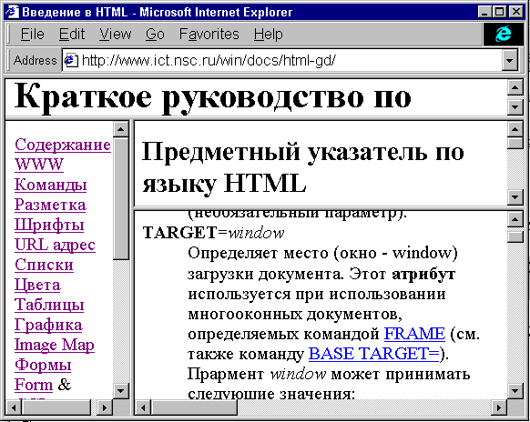

Фреймы (окна или рамки)- это достаточно мощный механизм навигации и создания пользовательских меню.
Что дают фреймы или окна:
Наглядным примером использования окон (фреймов или рамок) является пособие по языку HTML 4.0, которое вы в данный момент читаете.

Создание простого многооконного документа
Прежде, чем создавать многооконный документ необходимо определить как вы собираетесь использовать рабочее поле просмотрщика. Фреймы разделяют рабочее поле (окно-window) просмотрщика на две (или более) независимых части, в каждую из которых загружаются различные документы. В простом случае мы делим окно либо по столбцам (вдоль) либо по строкам (поперек) на две части (два окна).
Для создания простейшего многооконного документа (из двух окон) необходимо иметь как минимум три HTML страницы: две - которые будут показывать в окнах и третью (головную), которая создает эти окна.
В случае, если мы делим окно просмотрщика по строкам на два подокна, то мы должны создать две HTML страницы, row1.html и row2.html, первая из которых будет показывать в верхней части (в вернем окне), а вторая в нежней.
Далее создаем еще оду HTML страницу, определяющую способ разбиения рабочего поля.
<HTML>
<FRAMESET ROWS="20%, *">
<FRAME SRC="row1.html">
<FRAME SRC="row2.html">
</FRAMESET>
</HTML> |
В результате окно просмотрщика будет разделено поперек (по строкам) на две части, на верхнее окно будет отведено 20% рабочего поля, а на нижнее оставшееся часть (80%). В вернее окно будет загружена страницы row1.html, а в нижнее страница - row2.html.
Для того, что бы разделить рабочее поле вдоль (по столбцам) на две части, нужно использовать вместо атрибута ROWS атрибут COLS команде FRAMESET.
<FRAMESET COLS="20%, *"> |
В задании размеров подокон можно использовать абсолютные и относительные (как в приведенном выше примере) значения:
Задание размеров окна в пикселах рекомендуется для размещения в этом окне картинок фиксированного размера для организации навигационного меню. Для размещения текстовых окон лучше использовать относительные размеры. Это связано с тем, что сервер принципиально не знает реальных размеров окна просмотрщика у клиента.

При наличии фреймов (или нескольких информационно связанных окон просмотрщика) каждому из открытых окон должно быть присвоено собственное имя.
Каждое окно является независимым браузером и имена используются для установления связей между разными окнами и определения окна, куда будет загружена новая страница.
Вы имеете возможность, указав соответствующее имя окна, загрузить новую страницу одно окно по ссылке из другого.
Имя присваивается окну одним из трех способов:
Window-target: window_nameДанный параметр заставит документ загрузиться в окно с названием window_name, или создать такое окно, если оно не существует.
Таким образом, при использовании фреймов для задания имени окна используется атрибут NAME в команде FRAME, например:
<HTML> <FRAMESET ROWS="20%, *"> <FRAME NAME="first" SRC="row1.html"> <FRAME NAME="second" SRC="row2.html"> </FRAMESET> </HTML> |
Если в документе row1.html будет вызвана ссылка на документ newpage.html следующим образом
<A HREF="newpage.html" TARGET="second"> |
Существует несколько стандартных имен окон задаваемых атрибутом TARGET к команде <A>
| TARGET="_top" | Загрузить документ в основном окне просмотрщика (при этом ликвидируются все установки фреймов). |
| TARGET="_blank" | Открыть новое окно просмотрщика и в него загрузить документ. Эта команда работает и в отсутствии фреймов. |
| TARGET="_self" | Загрузка документа в то же самое окно, откуда он был вызван (работает по умолчанию). |
| TARGET="_parent" | Загрузка документа в "родительское" окно по отношению к текущему (см. ниже). |

Следующие атрибуты устанавливают возможности для клиента изменения размеров окна и прокрутки текста:
NORESIZE
<FRAME SRC="row1.html" NORESIZE> |
Клиенту запрещается изменять размеры окна. Имеет смысл устанавливать, когда окно содержит картинки.
SCROLLING=yes|no
<FRAME SRC="row1.html" SCROLLING=NO> |
Клиенту запрещена прокрутка текста в данном окне (по умолчанию установлено SCROLLING=yes).
3-D рамки (border)
ПО умолчанию команда FRAMESET рисует 3-D рамку (borders) между окнами (frames). Это можно отменить используя атрибут FRAMEBORDER, например:
<FRAMESET ROWS="20%, *" FRAMEBORDER=0 FRAMESPACING=0> |
Окна будут создаваться без рамок и без отступов (FRAMESPACING) от границ окон.

Более сложные многооконные документы, наподобие данного руководства, создаются при помощи комбинации соответствующих команд FRAMESET.
Например, мы хотим создать многооконный документ, наподобие того, каким является данное пособие, содержащий вверху неменяемый заголовок (его лучше всего задать картинкой), далее слева навигационное меню и справа два содержательных окна.

Первое создаем FRAMESET, который делит поперек рабочее поле на окно для заголовка
и окно для меню и содержания.
<HTML> <FRAMESET ROWS="10%, *"> |
<FRAME SRC="head.html"> |
<FRAMESET COLS="20%,*">
<FRAME SRC="menu.htm" NAME="menu">
|
<FRAMESET ROWS="40%,*">
<FRAME SRC="index.html" NAME="index">
<FRAME SRC="main.html" NAME="main">
</FRAMESET>
</FRAMESET>
</FRAMESET>
</HTML> |
Отношение родительского окна ("_parent") - переход на ступеньку вверх при разбиении рабочего поля, определяется следующим образом: если вызов документа происходит из окон "index" или "main", то родительским окном считается вся правая часть документа, если из окна "menu", то вся нижняя часть документа, при этом разбиение на окна нижнего уровня пропадает.
Если вы желаете присвоить имена промежуточным окнам разбиения (например правому окну), то в этом случае нужно в правое окно загрузить файл right.html с разбиением FRAMESET:
<FRAMESET COLS="20%,*">
<FRAME SRC="menu.htm" NAME="menu">
<FRAME SRC="right.html" NAME="right">
</FRAMESET>
</FRAMESET>
</HTML>
|
<HTML>
<FRAMESET ROWS="40%,*">
<FRAME SRC="index.html" NAME="index">
<FRAME SRC="main.html" NAME="main">
</FRAMESET>
</HTML> |
В этом случае окно "right" будет родительским по отношению к окнам "index" и "main".

В худшем случае приходится предусматривать работу сервера с этими клиентами, создавая дополнительный документ для них, используя команду NOFRAMES
<HTML>
<FRAMESET ROWS="20%, *">
<FRAME SRC="row1.html">
<FRAME SRC="row2.html">
</FRAMESET>
<NOFRAMES>
Welcome to page!
</NOFRAMES>
</HTML> |

Могут ли фреймы быть вложенными?
Команда (ТЭГ) FRAMESET может быть вложенным, как впрочем и написано в Описании синтаксиса. FRAME может содержать документ, являющийся в свою очередь FRAMESET. Более того, FRAMESET должен быть вложенными, особенно когда связь в одном окне должна перезагружать несколько других окон.
Что сказать о бесконечной рекурсии?
Можно создать FRAMESET, который будет бесконечно рекурсивно загружать один и тот же FRAMESET до тех пор, пока не кончится память. Посмотрите на этот пример:
<HTML> <FRAMESET rows="50%,50%"> <FRAME src=parents_url> <FRAME> </FRAMESET> |
Очевидно что он нехорош, но против подобного имеется защита. Любое окно, которое пытается использовать URL такой же как у любого из родителей, считается вовсе не имеющего URL (и обычно становится пустым).
Хотя это не помогает от всех идиотических документов, тем не менее изрядно уменьшает их количество.